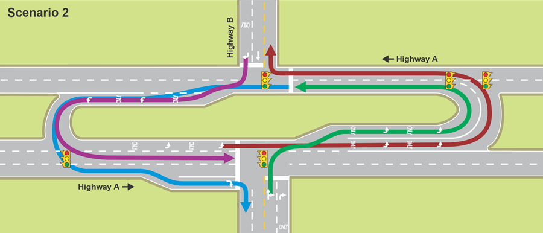
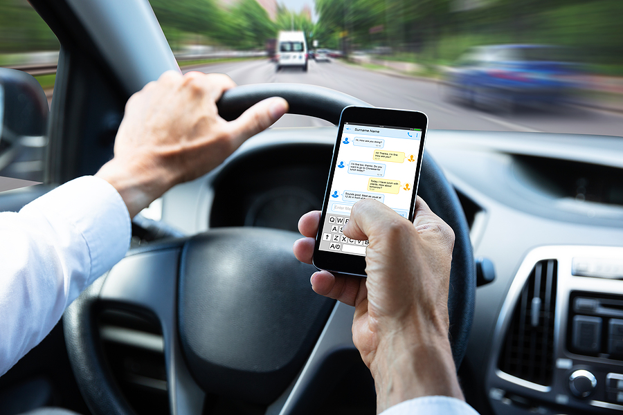

Michigan Laws
When traveling to Michigan, whether on vacation or for permenant residency, it is imperative to understand the state laws that differ from the rest of the country. Here are a few important regulations to be aware of when in Michigan:
Michigan Lefts
When planning to move from Highway A to Highway B, it is illegal to turn left at the intersection. In order to transfer from highway to highway, one must turn left into the median cross over, wait for traffic to clear, and either travel straight or make a right turn onto Highway B.
For more information on Michigan's traffic laws, click here.Hands-Free Law
As of 2023, it is illegal to use a cellphone or any mobile device while driving on Michigan roads. A driver may not hold a device with any part of their hands, arms, or shoulders. This includes texting while driving, taking a phone call, and changing your music if your phone is connected to the car's radio. Penalties can range from a $100 dollar fine to 16 hours of community service, and reoccuring offenses up the penalties to a $250 fine or 24 hours of community service.Carrying a Firearm
In Michigan, there are multiple regulations in place to keep our community safe while validating a citizen's 2nd Amendment rights. To apply for a Concealed Pistol Liscene (CPL), an applicant must be the following:
For more information, please read through the CPL Application Requirements.
Unusual Michigan Laws
Like many states in the US, Michigan has an abundance of unique laws set in place. Here is a list of our favorites: